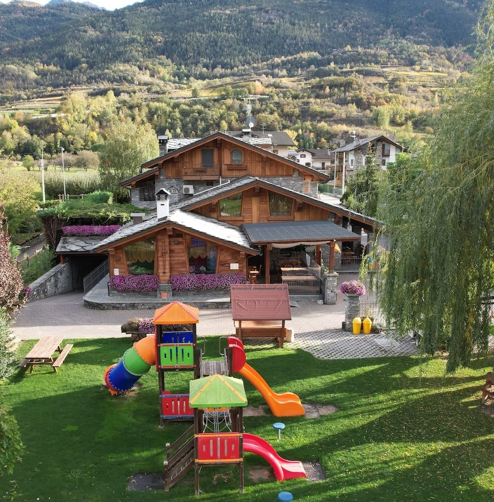
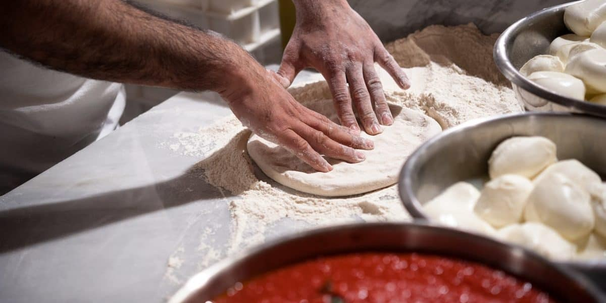

Dal 1994 a Jovençan
Pizzeria Avalon
Impasti a lunga maturazione con ingredienti selezionati: una pizza leggera, digeribile e dal gusto unico.
Dal 1994 a Jovençan
Impasti a lunga maturazione con ingredienti selezionati: una pizza leggera, digeribile e dal gusto unico.
18:00 - 23:00
Aperti dal giovedì al lunedì
Chiusi martedì e mercoledì


Tocca per scoprire